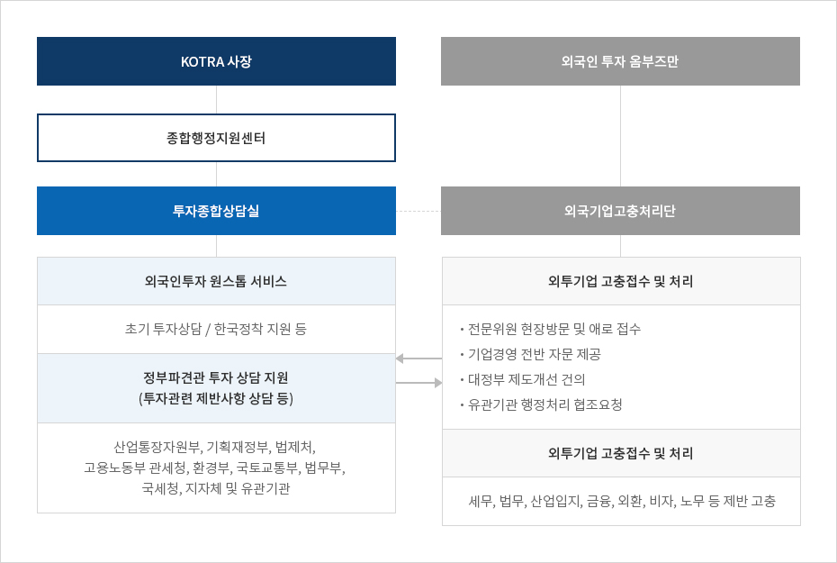
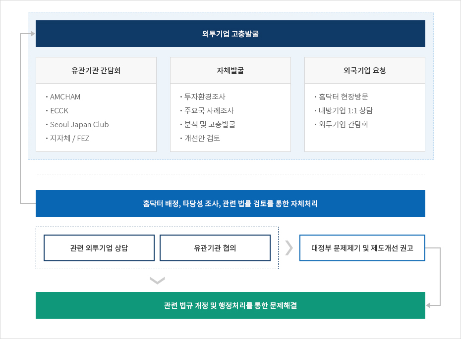

고충처리(외국인투자 옴부즈만)
- Home
- IK 서비스
- 주요 사업
- 고충처리(외국인투자 옴부즈만)
외국인투자옴부즈만 소개
외국인투자옴부즈만사무소는 기 진출 외국인투자기업에 대한 밀착형 사후지원과 고충처리를 위한 기구로 지난 1999년 설립 이후 외국인투자기업의 국내 경영활동 중 발생하는 각종 애로사항을 해결해왔습니다. 대통령이 위촉하는 외국인투자옴부즈만은 그 산하에 금융, 회계, 법률, 산업입지, 세무, 노무 등 해당 분야의 전문지식과 경험을 가진 전문위원들로 구성된 외국기업고충처리단을 두고 안정적인 외국기업 투자환경을 조성하기 위해 지속적으로 지원하고 있습니다.
한국의 외국인투자옴부즈만 제도는 UNCTAD와 APEC 등 국제 사회에서도 지대한 관심을 갖고 국경간 투자 원활화와 투자가-국가간 분쟁(ISD) 방지의 성공사례로 평가하고 있으며, 러시아∙카자흐스탄∙브라질∙베트남 등 다수 국가의 벤치마킹 사례가 되고 있습니다. 외국인투자옴부즈만 사무소는 다년간 축적된 사례를 통해 향후 발생할 수 있는 문제점을 미리 방지하고 투자환경을 개선하고자 최선을 다해 노력하고 있습니다.
외국인투자옴부즈만 바로가기
조직구성


- KOTRA 사장
- 종합행정지원센터
- 투자종합상담실
- 외국인투자 원스톱 서비스초기 투자상담 / 한국정착 지원 등
- 정부파견관 투자 상담 지원 (투자관련 제반사항 상담 등) 산업통장자원부, 기획재정부, 법제처, 고용노동부 관세청, 환경부, 국토교통부, 법무부, 국세청, 지자체 및 유관기관
- 외국인 투자 옴부즈만
- 외국기업고충처리단
-
외투기업 고충접수 및 처리
- 전문위원 현장방문 및 애로 접수
- 기업경영 전반 자문 제공
- 대정부 제도개선 건의
- 유관기관 행정처리 협조요청
- 외투기업 고충접수 및 처리 세무, 법무, 산업입지, 금융, 외환, 비자, 노무 등 제반 고충

지원절차

외투기업 고충발굴
유관기관 간담회
- AMCHAM
- ECCK
- Seoul Japan Club
- 지자체 / FEZ
자체발굴
- 투자환경조사
- 주요국 사례조사
- 분석 및 고충발굴
- 개선안 검토
외국기업 요청
- 홈닥터 현장방문
- 내방기업 1:1 상담
- 외투기업 간담회
홈닥터 배정, 타당성 조사, 관련 법률 검토를 통한 자체처리
- 관련 외투기업 상담, 유관기관 협의
- 대정부 문제제기 및 제도개선 권고
- 관련 법규 개정 및 행정처리를 통한 문제해결

홈닥터 서비스
-
외국인투자 옴부즈만 산하 외국기업고충처리단 소속 전문위원으로 홈닥터 구성
- 법무(2), 금융(2), 세무(1), 회계(1), 산업입지(1), 인사∙노무(1), IT&지적재산권(1), 바이오(1) 등 총 10명으로 구성
- 산업∙지역분야 전문위원의 외투기업 방문, 고충발굴 및 처리업무 수행
-
홈닥터 Hot-Line 운영 및 현장방문
- 홈닥터 별 담당 지자체 및 해당지역 전담 외투기업을 지정, 홈닥터-지자체-기업간 HOT-Line 구축으로 고충발굴 및 처리시스템 강화
- 산업∙지역분야 전문위원의 외투기업 방문, 고충발굴 및 처리업무 수행